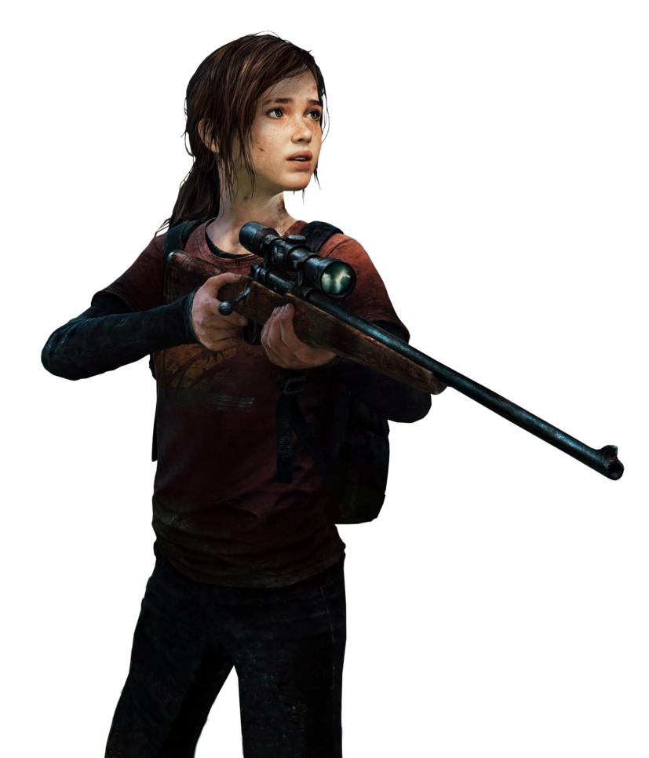
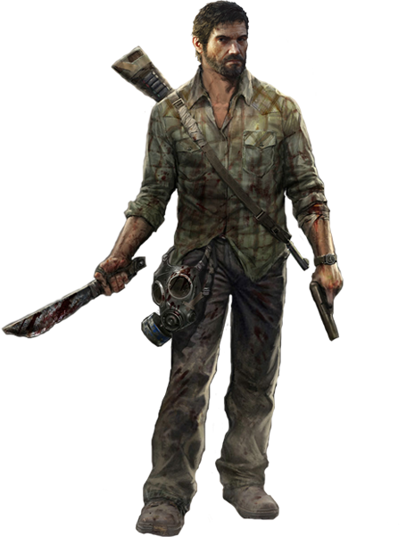

Ellie Williams
imagem ilustrativa
Ellie cresceu órfã na zona de quarentena de Boston e frequentou uma escola militar preparatória, onde conheceu e fez amizade com Riley Abel. Quando Ellie tinha quatorze anos, os dois foram infectados com a infecção cerebral por Cordyceps, onde Ellie descobriu que era imune. Uma amiga de sua mãe e líder dos Vaga-lumes, Marlene, acreditava que ela era a chave para a engenharia reversa de uma vacina. Marlene encarregou Joel Miller, um contrabandista, de escoltar Ellie para fora do QZ. A simples entrega se transformou em uma jornada de um ano pela América, e os dois acabaram formando um vínculo estreito.
Joel Miller
imagem ilustrativa
Joel era um sobrevivente na América pós-apocalíptica que havia sido devastada pela infecção cerebral por Cordyceps. Depois de perder sua única filha, Sarah, nos estágios iniciais do surto, Joel se tornou um contrabandista implacável e cínico, eventualmente encarregado de contrabandear e proteger Ellie Williams, uma jovem que era a chave para a sobrevivência da humanidade. Joel eventualmente formou um forte vínculo com ela.